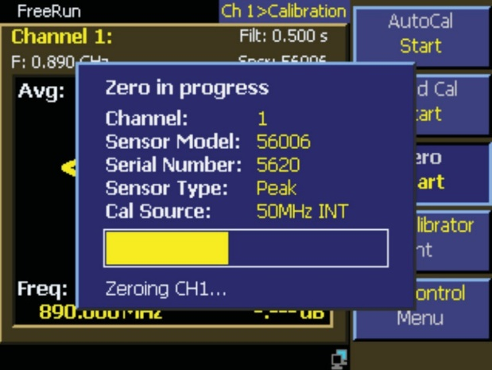
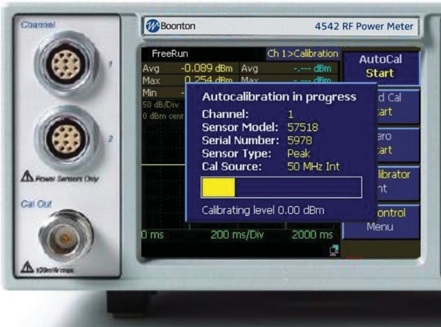
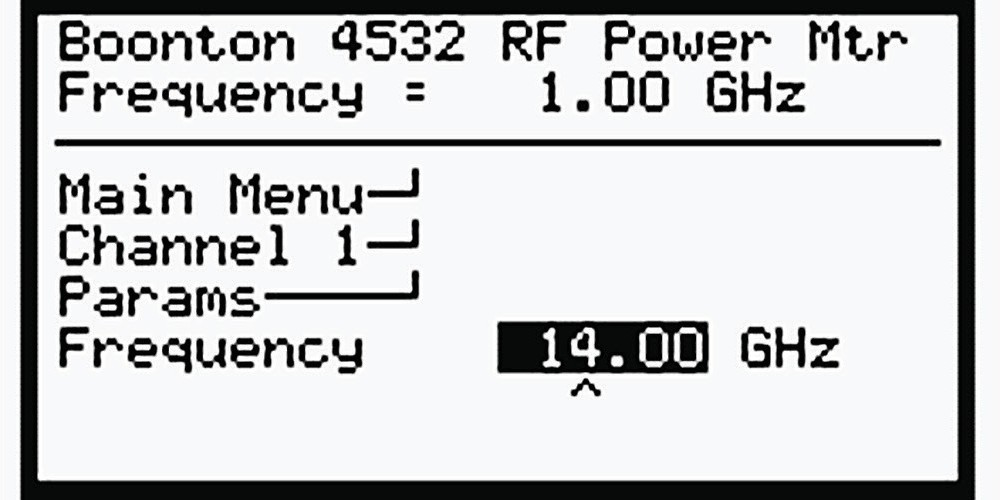

Chapter 5: Calibration Issues
Measurements are meaningless if they are not accurate. Even with the right equipment, a valid calibration is what makes the result trustworthy. Power meters and sensors must both be calibrated so that the displayed reading agrees with the actual RF input power, regardless of instrumentation and environmental variables.
This chapter covers linearity and frequency calibration, the two integral parts of the power measurement calibration process. Most modern power meters also include temperature compensation, typically handled as part of linearity correction, so it is not covered separately here.
5.1 Factory Open-Loop Calibration
The simplest calibration method dates back to the early days of measurement. Apply known signal levels, mark the location of the indicator needle on the face of the meter at each step, and scribe a few marks between if needed. This creates a primitive lookup table that compensates for the gain and shape (linearity) of the combined sensor and meter transfer function.
As measurement evolved, meter face markings became fixed and adjustments were performed internally via analog potentiometers. Nonlinear networks of diodes and resistors provided moderately accurate correction for the curvature of the transfer function. Later, discrete digital circuitry replaced these nonlinear networks for the shaping function. In every case, the sensor and the meter were calibrated together as a unit.
More recent power meter designs are equipped to handle removable sensors, so it makes sense to calibrate the meter and the sensor separately. Either can be interchanged without invalidating the calibration. To calibrate the meter, it is connected to one or more precision DC reference voltages that simulate the output of a power sensor, and the meter is adjusted to standardized gain values across its operating range. This is often called DC calibration. It ensures that a particular sensor produces the same reading on any calibrated power meter. The adjustment is sometimes a physical trim of analog potentiometers, sometimes a digital adjustment of gain and shaping coefficients through software. With modern systems, this calculation happens upstream in the power sensor itself. Because such systems do not take any DC voltage readings (the sensor outputs digital data directly), the cumbersome DC calibration step is bypassed entirely.
In older designs, the output of each power sensor is different. A traditional power meter must know the precise relationship between RF input amplitude and detected output voltage from the sensor. This information ranges from one or two numbers to multi-dimensional tables of calibration data. Information about the sensor's transfer function is characterized at the factory and stored in a nonvolatile EEPROM in the sensor. When the sensor is connected, the meter downloads the calibration data and uses it as the basis for computing the proper RF power for a given output signal from the sensor.
Some sensor types are very linear. Thermocouple sensors produce an output voltage directly proportional to input RF power. CW diode sensors operating within their square-law region (below approximately -20 dBm) share that property. Linear power detectors are simple to calibrate. For some measurements, all that is needed is to store the transfer gain, a single value of microvolts per milliwatt, for moderate accuracy.
As the transfer function becomes nonlinear or higher accuracy is required, more complex equations characterize the transfer function. Common techniques include polynomial curve fits over segments or over the entire function. When calibration points are spaced closely enough, even a second-order curve fit can produce excellent results.
5.2 Single, Double, and Multipoint Linearity Calibrations
For best accuracy in the field, many classical power meters allow fine adjustments to the factory calibration using a local reference level. There are three basic types of field adjustment.
Single-point adjustment at zero input. Often called a "sensor zero" or "null adjustment." Stored data still characterizes detector and instrument gain and detector linearity (shaping). No RF reference is used. The zero adjustment is supported by nearly all instruments and is necessary for low-level power measurements. In contrast to historical sensor designs, this is the only field calibration necessary for modern USB sensors. For best accuracy, a zero is performed immediately before any measurement in the lowest 10 dB or so of a sensor's dynamic range. This minimizes the contribution of sensor drift and other phenomena that cannot be characterized in the factory calibration. The zero adjustment typically takes a highly filtered reading over several seconds and uses the value as an offset. The stored factory transfer function is then adjusted up or down by the sensor zero.


Two-point adjustment. A sensor zero (offset adjustment) plus a gain adjustment using a fixed power reference. Many power meters include a built-in 1.00 mW (0 dBm) RF reference for this purpose. Adjusting the gain of the curve compensates for small attenuation variations from sensor drift, aging, and connector wear. This process is sometimes called a "fixed cal." It affects all power values equally: by a fixed percentage in linear power (milliwatts), or by a constant number of dBm in logarithmic units. The stored factory transfer function is still used, but adjusted for both slope and offset.
Multi-point adjustment. A field procedure also known as a "step cal" or AutoCal in some Boonton-lineage power meters. Instruments that support step calibration replace the fixed 0 dBm power reference with a precision power-sweep calibrator that generates calibrated RF levels across a wide dynamic range. The calibrator steps through the sensor's full dynamic range, and a series of calibration values are stored for the exact connector / sensor / cable / instrument assembly in use, at the current operating temperature.


Depending on how many power steps are used, the factory transfer function is either adjusted at each point or replaced entirely. In either case, several uncertainties are reduced or eliminated by closing the loop in the field.
What field step calibration buys you:
- Both gain and offset adjustment.
- Fine-tuning of the transfer function over the sensor's entire dynamic range.
- An improved current-temperature calibration beyond the factory-characterized compensation tables.
- Compensation for detector aging and degradation. Temporary small overloads, ESD, and physical shock can cause slight changes to detector transfer functions.
- Compensation for changing losses from connector wear.
Engineer's corner. Modern thermally stabilized two-path sensors (such as the Berkeley Nucleonics 12100 series) reduce the field calibration burden to almost nothing. Zero is typically not required. Reference calibration is not required. The factory multipoint calibration runs over the entire dynamic range and is stored in nonvolatile memory. Recertification annually keeps long-term drift in check, but the day-to-day operator never thinks about calibration at all.
5.3 Field Linearity Calibration Methods
The field calibration methods so far rely on applying a known RF power reference to the sensor input to allow the sensor / meter combination to yield the most accurate readings possible. Looking at the sources of inaccuracy and drift, several stages sit between the input RF signal and the digitized detector value, and all of them must be accounted for during system calibration.
Traditionally, power meter base units and sensors are calibrated separately as discussed in Section 5.1. Field calibration (zero, fixed cal, or step cal) is then used to calibrate out the small errors that occur when a sensor is mated to a particular meter, as discussed in Section 5.2. Historically, the basic function of a power sensor was to convert RF power to DC voltage, while the function of a power meter was to convert that DC voltage to a meaningful power reading.
The power sensor is factory characterized with one or more linearity tables describing its transfer function. In some cases the tables describe deviations from a stored default transfer function. Depending on the sensor, these tables may have multiple inputs to allow compensation for temperature and frequency, both of which can strongly affect the curve. In all cases, the sensor's calibration tables describe how its DC output (sometimes DC chopped to AC) relates to the RF input.
The job of an older-style power meter is simple: measure the sensor's DC output and use the appropriate transfer function to linearize the value into milliwatts or dBm. This requires the meter to know exactly what voltage the sensor is outputting, which is where calibration of the meter base unit comes in. That calibration is performed by connecting a precision DC source to the meter's sensor input and calibrating at one or more voltage points. When the sensor is then connected, the entire system is in a calibrated state.
This process is not perfect. Small losses occur in cables and connectors between the sensor and the meter, plus noise offset and drift in the meter's analog stages. This drift and uncertainty is referred to as instrumentation uncertainty (see Chapter 9) and adds to the drift and uncertainty of the detector itself. Cutting-edge designs have largely eliminated this uncertainty by performing the RF power calculation and digitization inside the sensor. The Berkeley Nucleonics Model 12100 series operates this way: every reading is computed inside the sensor, and only digital data crosses the USB cable to the host.
For older designs, the uncertainty can be reduced by any of three methods.
Closed-loop field calibration with a known RF level applied to the detector input (sensor input connector). This typically uses a precision RF power reference or calibrator built into the meter. With this technique, the entire measurement path is inside the calibration loop, and overall accuracy depends on the accuracy of the RF calibrator. Connector and detector changes are calibrated out, and a faulty or blown sensor is immediately apparent. With step calibration, the entire dynamic range can be fully calibrated in the field. This usually produces the highest measurement accuracy. The chief disadvantage is that the sensor must be disconnected from the source and connected to the calibrator each time field calibration is performed, which is inconvenient in some automated systems.
Field calibration with a known DC level injected immediately after the detector. This bypasses and disconnects the detector and injects a precision DC level into the signal chain in place of the detector output. The input connector and detector itself are left out of the calibration loop. Generating a stable DC voltage is easier than generating an equally stable RF power level, so some uncertainty from not calibrating the entire signal chain is offset by lower uncertainty in the calibration source. The advantage is that the sensor stays connected to the device under test during calibration. The disadvantage is that drift or malfunction from connector or detector aging or damage goes unnoticed. Because factory-generated linearity data must still be used for shaping, detector linearity changes cannot be compensated. Accuracy is somewhat lower than closed-loop RF calibration.
Digitizing the signal immediately after the detector and transmitting digital data to the base unit. This is the method used by most modern USB sensors. There are relatively few analog stages between the detector and the digitizer. During factory calibration, the entire analog signal chain is present, and because the circuitry is in the same housing and the sensor output is digital data, the system can be characterized at the factory more accurately than a separable sensor and meter. Zero calibration is the only field calibration required, especially when measuring near the noise floor. Errors from connector and detector aging or damage can still occur, so periodic absolute power and frequency response validation or calibration is still recommended to maximize measurement accuracy.
Techniques can be combined. Field linearity calibration on a digitizing sensor is supported by most software, allowing zero adjustment and often a fixed calibration using a known RF reference source. As of the publication of this guide, no digitizing sensors permit a full power-sweep field calibration, so all rely on stored factory linearity data.
5.4 Frequency Response Correction
The task of a traditional, non-digitizing power sensor is straightforward: convert RF to a measurable DC level across a broad range of carrier frequencies. Detectors are not perfect, so there are always small variations in the sensor's output as frequency changes. Most classical sensors are fairly flat at lower frequencies and begin to experience increasing response deviations as input frequency goes up. Matching at the input RF connector and within the detector assembly begin to play a role, and the output of the detector itself eventually falls off.
The good news is that the variation is generally small (typically no more than a few dB). When the operating frequency is known, it is possible to compensate for the response deviations. Power sensors are factory calibrated at a series of frequency points to generate a table of correction values. These values are most commonly referred to as Effective Efficiency (in percent) or Calibration Factors (in dB), and are supplied to the user.

In most modern sensor designs, the table is stored in an EEPROM within the sensor, and the meter automatically loads and applies the appropriate factor based on the user's set frequency. If the operating frequency falls between table entries, an interpolation or curve fit is used. In some sensors, the frequency correction data is part of a multi-dimensional table that simultaneously performs linearity, frequency, and temperature compensation.
Two common methods generate basic calibration factors.
Direct comparison with a gold-standard sensor. A leveled signal source is swept or stepped through each desired calibration frequency, and the leveled power reading from a NIST-traceable reference sensor is recorded at each calibration frequency. The reference is replaced by the sensor under calibration, and the sweep is repeated. The ratio at each frequency point between the resulting reading and the corresponding reference reading is the calibration factor.
Power-splitter method. A terminated average thermistor sensor (reference), precision power splitter, and signal source are connected together. The generator supplies a CW signal at a specific frequency to the precision splitter, and the reference power meter value corrects for any level variations from the source or splitter. The center point of the splitter is a constant-voltage point, and the SWR at the splitter output port is dominated by that side arm of the splitter. Low splitter SWR minimizes mismatch error in the transfer of calibrations. The stability of the thermistor mount means that the combination can be calibrated accurately and performs well across wide variations in generator characteristics. It supplies transfer calibration factor accuracies of 1.2% to 2.5% (RSS) across the frequency range of the system.
A common mistake is assuming that the output level of a signal generator is accurate and its VSWR is good. Leveling accuracy of most generators is ±1 dB, with VSWR rarely better than 1.35:1 across a broad frequency range. RF sweepers are worse, often with leveling inaccuracies up to ±3 dB. Calibration factors cannot be checked using just the output of a generator. They must be checked by one of the methods above. Assembling and maintaining a traceable, automated sensor calibration station based on the power-splitter method is now within reach of most calibration labs.
Pro tip. Always tell your sensor what frequency you are measuring. A sensor told it is at 100 MHz when the signal is actually at 10 GHz will happily report a wrong number. The error in dB is typically small, but when you are chasing the last 0.5 dB of transmitter compliance, it is exactly the kind of error that keeps you at the bench all weekend.
Check your understanding
Three quick questions on calibration. Your answers save on this device.